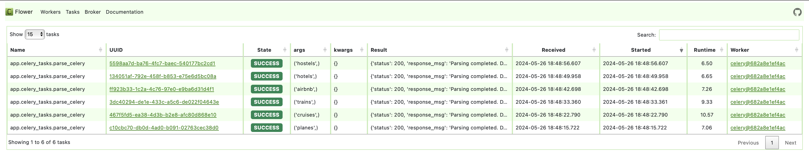
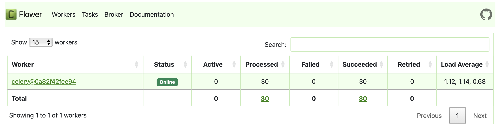

ЛР 3. Упаковка FastAPI приложения в Docker. Работа с источниками данных. Очереди
Задание 3
Вызов парсера из FastAPI через очередь
Конфигурация Celery
Создадим отдельное celery-приложение и определим задачу для вызова парсера.
LR1/endpoints/celery_tasks.py
from celery import Celery
parser_url = os.getenv('PARSER_URL')
redis_url = os.getenv('REDIS_URL')
celery_app = Celery('tasks', broker=redis_url, backend=redis_url)
@celery_app.task()
def parse_celery(key: str):
headers = {'accept': 'application/json'}
data = {"key": key}
response = requests.post(parser_url, headers=headers, params=data)
time.sleep(5)
return {"status": response.status_code, "response_msg": response.json()['message']}
Асинхронный эндпойнт
Добавим еще один эндпойнт для асинхронного вызова парсера через очередь.
LR1/endpoints/parser_endpoint.py
from app.celery_tasks import parse_celery
# async parser call
@parse_router.post("/parse_async", tags=['Parser'],
description='One of: "planes", "cruises", "trains", "airbnb", "hotels", "hostels"')
async def parse_data_async(key: str):
result = parse_celery.delay(key)
return {"message": "Parsing started", "task_id": result.id, "status": result.status}
Оркестрация сервисов в docker-compose
Здесь представлена версия с дополнительными сервисами для реализации очереди. docker-compose.yml
services:
redis:
image: redis
ports:
- 6379:6379
celery_tasks:
build: ./LR1
command: celery -A app.celery_tasks worker --loglevel=info
environment:
- PARSER_URL=http://parser:8001/parse
- REDIS_URL=redis://redis/0
depends_on:
- redis
- main
- celery_beat
celery_beat:
build: ./LR1
command: celery -A app.celery_tasks beat --loglevel=info
environment:
- PARSER_URL=http://parser:8001/parse
- REDIS_URL=redis://redis/0
depends_on:
- redis
- main
flower:
build: ./LR1
command: celery -A app.celery_tasks flower --port=5555
environment:
- PARSER_URL=http://parser:8001/parse
- REDIS_URL=redis://redis/0
ports:
- 5555:5555
depends_on:
- redis
- main
- celery_tasks
db:
image: postgres
volumes:
- ./LR3/web_lab1.sql:/docker-entrypoint-initdb.d/web_lab1.sql
- lab3_data:/var/lib/postgresql/data/
environment:
- POSTGRES_USER=admin
- POSTGRES_PASSWORD=admin
- POSTGRES_DB=lab3
- PGDATA=/var/lib/postgresql/data/pgdata
ports:
- "5432:5432"
main:
build: ./LR1
depends_on:
- redis
- db
environment:
- DB_ADMIN=postgresql://admin:admin@db/lab3
- PARSER_URL=http://parser:8001/parse
- REDIS_URL=redis://redis/0
ports:
- "8000:8000"
parser:
build: ./LR3
depends_on:
- db
environment:
- DB_ADMIN=postgresql://admin:admin@db/lab3
ports:
- "8001:8001"
volumes:
lab3_data:
Проверка работы очереди
С помощью условного "клиента" проверим, как обрабатываются запросы.
client.py
import requests
def test_parse(key: str):
endpoint = "http://127.0.0.1:8000/parse_async"
headers = {'accept': 'application/json'}
data = {"key": key}
response = requests.post(endpoint, headers=headers, params=data)
return response.json()
if __name__ == '__main__':
keys = ["planes", "cruises", "trains", "airbnb", "hotels", "hostels"]
for k in keys:
print(test_parse(k))
Видим, как обработчик выполнил все задачи. 
Периодические задачи
Чтобы не тестить ручным клиентом, можем заставить приложение проверять самого себя.
Добавим в конфигурацию celery-приложения выполнение задачи парсинга каждые 20 секунд.
LR1/endpoints/celery_tasks.py
@celery_app.on_after_configure.connect
def setup_periodic_tasks(sender, **kwargs):
key = random.choice(["planes", "cruises", "trains", "airbnb", "hotels", "hostels"])
sender.add_periodic_task(20.0, parse_celery.s(key))
Добавим сервис в docker-compose. Beat с определенной периодичностью добавляет задачи в очередь, worker занимается их выполнением.
docker-compose.yml
services:
...
celery_tasks:
build: ./LR1
command: celery -A app.celery_tasks worker --loglevel=info
environment:
- PARSER_URL=http://parser:8001/parse
- REDIS_URL=redis://redis/0
depends_on:
- redis
- main
- celery_beat
celery_beat:
build: ./LR1
command: celery -A app.celery_tasks beat --loglevel=info
environment:
- PARSER_URL=http://parser:8001/parse
- REDIS_URL=redis://redis/0
depends_on:
- redis
- main
...
Пока писала эту документацию, выполнилось 30 задач. 